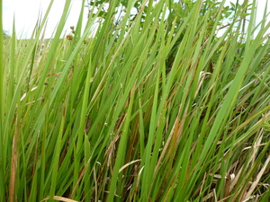

kalan 
/kalan/
n.
“cogon_grass”
1.
n.
Imperata_exaltata
Imperata_cylindrica
cogon grass
Wrd.Gloss: cogon_grass
Cult. Generic for various species of Imperata. The lanceolate leaves (20-50 cm long) are used for thatching and the stems for various handicrafts. This tough grass is quickly established in deforested areas, making the land useless for further agriculture. It can be forced out by hardy trees such as ipil-ipil.
Eng. cogon grass; grass
Tag. kugon-lake
Ceb. kugon
OCM: Flora (137)
DDP: Grass, herb, vine (1.5.3)
Online dict status: -
Usage level: F
2.
n.
Imperata_cylindrica
a short variety of cogon grass
Cult. 30-80 cm high. Cf. (WBM) kelambu-lambù, a brittle grass similar to cogon.
Eng. cogon grass
Tag. kugon
Ceb. kugon
OCM: Flora (137)
Online dict status: -
Usage level: F
n.
thatch
Miggalab te kalan su ig-impus ig-atep.
He cut and bundled cogon grass so that he could finish roofing.
Eng. thatch
Tag. páwid; kúgon
Ceb. kúgon; nípà
Ilo.: pán-aw
OCM: Architecture (341)
Online dict status: -
Usage level: M
Updated by: RJH,QDL
Last updated: 13/Oct/2009
"kalan" in text "Making Lead Sinkers"
"kalan" in text "Making Lead Sinkers"
"kalan" in text "Making Lead Sinkers"
This page last updated: 03-Jan-2020
Copyright © 2009-2014, Matigsalug Language Christian Association, Inc